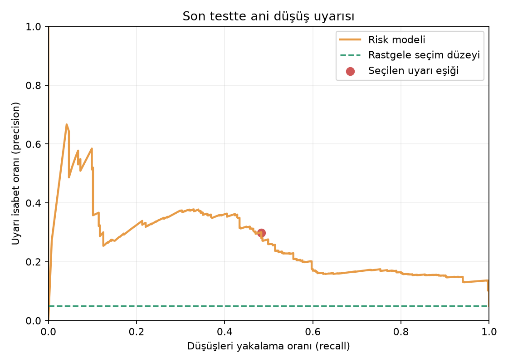
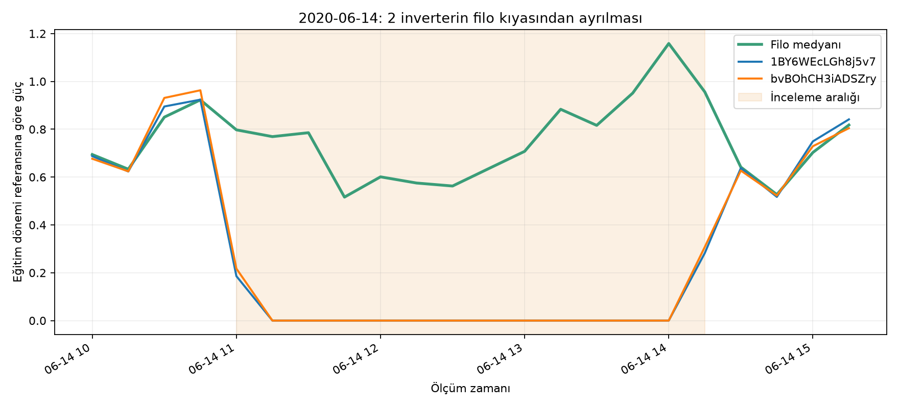

22 İNVERTER · TARİHSEL OPERASYON ANALİZİ
Tahminden operasyon kararına.
Ani güç düşüşü riskini önceden işaretle, aynı koşullardaki inverterleri kıyasla ve gerçekleşen olayları tek yerde incele.
Geçmiş kayıtların analizi: Bu ekran 2020 test verisini kullanır. Uyarılar operatör incelemesi içindir; doğrulanmış arıza teşhisi değildir.
15 DAKİKA ÖNCEDEN
Ani üretim düşüşü riski
Ayrı bir model; mevcut güç, ışınım ve son 15 dakikadaki değişime bakarak bir inverterde sert düşüş riski olup olmadığını işaretler.
Sert düşüş tanımı—eğitim verisindeki güç ölçeği
Son testte uyarı——
İsabet artışı—rastgele seçim düzeyine göre

Önemli sınır: Risk puanı kesin olasılık değildir. Uyarı eşiği doğrulama bölümünde seçildi; yukarıdaki isabet ve yakalama sayıları ayrı tutulan son testten gelir.
FİLO RADARI
Hangi inverterler gruptan ayrıldı?
Her inverter önce kendi eğitim dönemi normal gücüne göre ölçeklenir. Santral güçlü üretirken aynı andaki filo medyanının belirgin altında en az dört ardışık ölçüm kalırsa inceleme kaydı açılır.

22 inverterin özeti
Yorum: Düşük göreli güç; planlı duruş, gölgelenme, iletişim veya başka bir nedenle oluşabilir. Bu veri nedenini doğrulamaz.
OPERATÖR OLAY KAYDI
Gerçekleşen olaylar
Büyük tahmin sapmaları ve uzun filo ayrışmaları zaman, ölçüm ve ilgili inverterlerle kaydedilir.